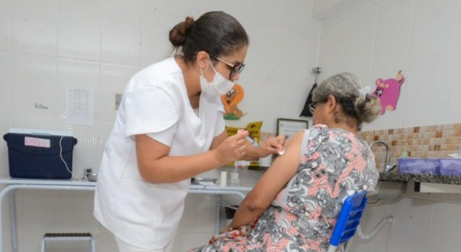

20 de outubro de 2022 - 17:00
Só 39% da população acima de 40 anos recebeu esta dose de reforço da vacina.
A queda acentuada no número de casos de coronavírus em Minas Gerais tem mantido a procura pela vacina em patamares muito abaixo do esperado em algumas faixas etárias. Dados do Vacinômetro, divulgados pela Secretaria de Estado de Saúde (SES), mostram que apenas 39,52% das pessoas com 40 anos ou mais tomaram a segunda dose de reforço (equivalente à quarta dose), o que representa 3.577.483 de imunizados. Na primeira dose de reforço (terceira vacina), foram 11.407.418 pessoas (62,64%).
Em relação ao público com idade entre 3 e 11 anos, a cobertura vacinal da segunda dose ainda está em 54,88%, o que garantiu a imunização de 1.026.302 pessoas. Na primeira dose, foram 1.470.263 (78,62%). A SES tem intensificado as ações e alertado a população sobre a necessidade de as pessoas procurarem os postos e as Unidades Básicas de Saúde (UBSs) para completarem a imunização contra a covid-19, doença que já provocou, de março de 2020 até agora, mais de 680 mil mortes no país e 63.790 em Minas Gerais.
“Não podemos relaxar e esquecer o que aconteceu. Temos que nos preparar para o próximo ano, porque essa doença agora tem esse caráter sazonal e deve, obviamente, voltar a circular. Porém, com uma letalidade menor do que a gente vem vivenciando com uma cepa menos letal e a população vacinada”, disse o secretário de Saúde de Minas, o médico Fábio Baccheretti, destacando a necessidade de as pessoas completarem a imunização o mais rápido possível, assim como fez nesta semana, a aposentada Jueleida Maria Nunes, de 66 anos, que tomou a segunda dose de reforço contra a covid.
“Eu achei que não era necessário tomar a quarta dose da vacina. Alguém na minha família falou que não precisava. Mas o que manda é a vacina no braço, porque a ciência não vai fazer um imunizante para prejudicar o povo”, enfatiza Jueleida Maria, lembrando que tomou as outras três doses e que não sentiu nenhum transtorno. “São muitos comentários nas redes sociais, mas essas informações não são verdadeiras. Acho que se for para garantir a saúde, as pessoas devem tomar a vacina sim, porque nós já vimos que depois que ela surgiu, o número de mortes diminuiu muito”, afirma.


Projeto final do Projeto Rio Pomba Valley, desenvolvido por Januária Holmes
 Facebook
Facebook Twitter
Twitter Whatsapp
Whatsapp